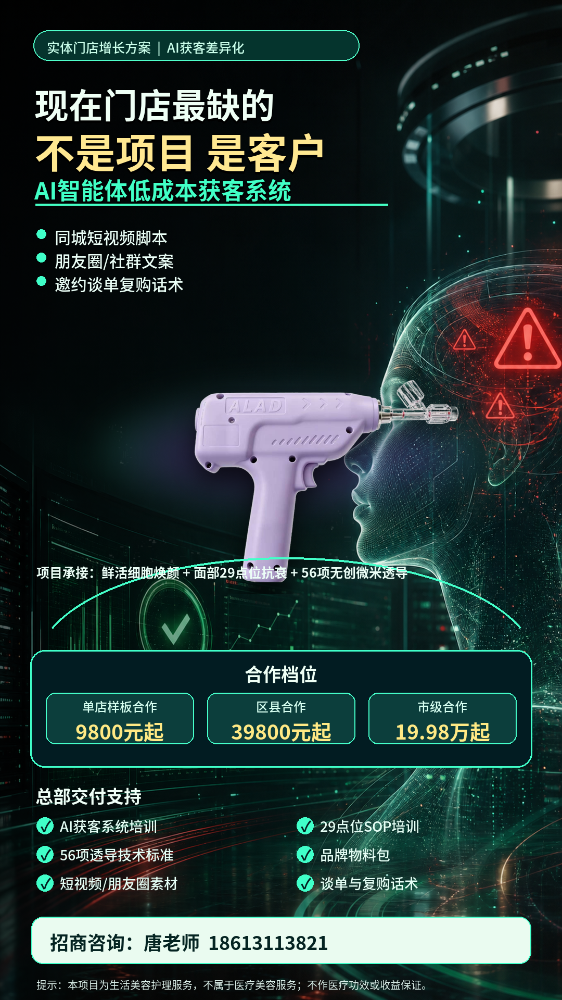
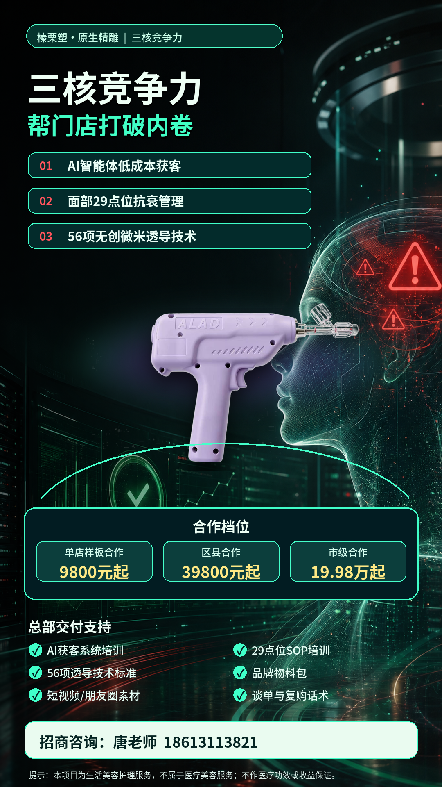

AI智能体获客系统
生成同城短视频脚本、朋友圈文案、社群活动、顾客邀约、异议处理和复购提醒，降低内容运营成本。
半年沉淀，不是散点工具
从 Cotex 智能体铁军、短视频获客生成器，到美业轻抗衰资料包、榛栗塑项目招商包装、自然阳光舌象营养观察资料，你这半年一直在做同一件事：把AI从概念变成实体商家能看见、能复制、能成交的工作流。官网要做的事，就是把这套能力讲清楚、讲可信、讲成可咨询、可合作、可持续输出内容的个人品牌阵地。
个人品牌定位
你不是单纯教软件操作，而是帮老板回答三个问题：我的生意怎么用AI获客，我的内容怎么持续拍，我的客户怎么从咨询走到成交。
核心能力
围绕实体商家的获客、承接、成交和复购，搭建可复制的智能体流程。
生成同城短视频脚本、朋友圈文案、社群活动、顾客邀约、异议处理和复购提醒，降低内容运营成本。
把产品、客户、痛点和卖点拆成口播脚本、封面标题、置顶评论、分镜字幕和9:16竖屏视频任务。
按“先共情、再确认需求、再给建议、最后轻邀约”的顾问式成交逻辑，沉淀咨询转化SOP。
把项目定位、价格梯度、招商话术、门店交付流程、合规禁用词和朋友圈素材打包成可招商方案。
Cotex智能体铁军
当前岗位
负责把老板经验和产品卖点拆成短视频选题、口播脚本、直播预热、朋友圈内容和同城引流动作。
行业方案
围绕安全表达、内容获客、私域承接和咨询转化，输出30条选题、10条AI提示词、20句转化话术。
把产品、仪器、培训、物料、运营和AI获客支持，包装成单店、区县、市级合作模式。
用公众号内容、短视频、数字人分享和线索沉淀，帮助商家低成本启动视频号和直播获客链路。
落地案例
面向美容院、皮肤管理中心和养生美肤门店，将“AI智能体低成本获客系统 + 面部29点位抗衰管理 + 56项无创微米透导技术 + 鲜活细胞灵感焕颜护理”组合成可招商、可成交、可复购的门店增长方案。

已经沉淀的项目资产
创始人大脑、公众号工厂、短视频工厂、数字人工厂和线索中心。
用真人形象、声音样本和口播脚本，沉淀可持续分发的内容资产。

把产品卖点、门店扶持、合作模式和合规提示做成招商资料。
合作流程
确认行业、客群、产品结构、获客渠道、成交卡点和合规边界。
配置智能体分工、内容模板、私域话术、线索表和复盘看板。
批量生成选题、脚本、数字人口播、朋友圈文案和直播预热。
围绕咨询率、加微率、成交率、复购率，调整话术与产品路径。
拍摄文案入口
这是官网里的第一版轻量脚本生成器，后续可以继续接入你的资料库、案例库和声音/数字人流程。
30秒口播脚本
很多传统老板现在最累的，不是产品不好，而是每天都在重复做内容、跟客户、催成交。
AI智能体真正的价值，不是替你玩软件，而是帮你把选题、脚本、私域话术和复盘流程固定下来。
你先不用追求复杂系统，先做一件事：把你每天最重复的3个动作交给AI，让它变成你的增长员工。
想要AI获客诊断表，在评论区打AI。
咨询方案
填写业务类型和当前卡点，页面会在本地生成一份初步沟通卡，适合发给团队或作为官网咨询入口的第一版文案。
AI增长诊断卡
这里会根据你的业务类型，生成优先启动的智能体岗位、7天动作和官网咨询话术。